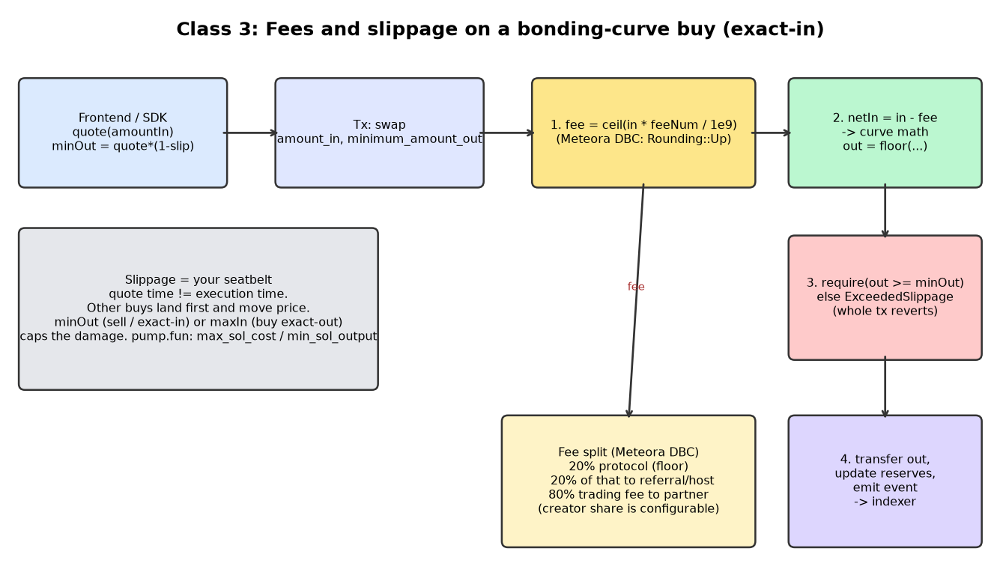

Part 3 · On-chain
Fees and slippage
Who gets paid on every trade, and how the program protects a buyer whose price moved while their transaction was in flight.
1 Everyday analogy
You board a danfo bus. The fare is the price, and the conductor takes his cut from every fare. That's the trading fee. Before you climb in, you tell him: "I'll pay at most ₦500 to Obalende." If the fare jumps to ₦700 while the bus is filling, you don't pay. You get off, and you've lost nothing.
That "at most ₦500" is your slippage limit. It's written on your ticket, and the bus (the program) must respect it. It's not just a promise from the conductor (the website).
2 Design question
Your website quotes Tunde 10,000,000 tokens for 285,042,334 lamports, fee included. Two other buys land before his transaction, so the price has moved.
(a) What should the program do with Tunde's transaction, and what number must he send with it? (b) Should the 1% fee be rounded up or down, and should it be taken from what he pays or from what he receives?
Try to answer on your own first, in plain English. A gut answer is fine.
Reveal answer
(a) Tunde signs a limit along with his order. On pump.fun that's buy(amount, max_sol_cost) Real: pump.fun docs: "buy the exact amount of coins … using at most max_sol_cost lamports". The website computes it as quote + tolerance, for example 1% gives 287,892,758. If the real cost is now higher, the program reverts the whole transaction. Tunde loses only the network fee. Selling works the same way with sell(amount, min_sol_output). Meteora DBC's swaps fail with ExceededSlippage in the same case Real: Meteora DBC repo.
(b) Round the fee up, in the protocol's favour. Meteora DBC rounds its fees up too. In our clone General pattern / our clone, a buy fee is added on top of the SOL cost, and a sell fee is taken out of the SOL paid out.
3 Simple explanation
Fees
- pump.fun Real: pump.fun docs:
fee_basis_points == 100, which is 1%, sent to a fee recipient on every buy and sell. - Meteora DBC Real: Meteora DBC repo: fee numerators are over
FEE_DENOMINATOR = 1,000,000,000. The protocol takes 20% of the trading fee, and when a referral host is present, the host gets 20% of the protocol's share. Base fees are bounded betweenMIN_FEE_BPS = 25andMAX_FEE_BPS = 9900.
Slippage and swap modes
- Exact in: "I spend exactly this much SOL, and I want at least N tokens."
- Exact out: "I want exactly N tokens, and I'll pay at most M SOL." That's the pump.fun
buyshape. - Partial fill: Meteora DBC has a third mode,
PartialFill, which fills only what the pool can give and charges only the input it actually used (in its code, anamount_leftstays with the trader). Its swap modes areExactIn,PartialFillandExactOut.
A slippage check is worthless if only the website does it. A bot can skip your website, so the program has to check the limit.
4 The math
Fee with basis points (pump.fun-style, 1 bp = 0.01%):
Meteora-style fee numerator:
On a 1,000,000-lamport fee with a referral, the partner and creator side gets 800,000, the protocol 160,000, and the referral host 40,000.
Slippage limits that the website sends with the order, where is the tolerance in bps:
With and (1%), max_sol_cost = 287,892,758.
5 TypeScript code
Our fee and slippage helpers General pattern / our clone. They copy the shape of Meteora's constants, but they are not Meteora's Rust code.
// Chapter 3 — fee + slippage helpers.
// The fee split mirrors the SHAPE of Meteora DBC's constants (FEE_DENOMINATOR = 1e9, protocol takes
// 20% of the trading fee, a referral host gets 20% of the protocol share, fees round up).
// This is our clone's simplified TypeScript, not Meteora's Rust code.
export const FEE_DENOMINATOR = 1_000_000_000n;
export const PROTOCOL_FEE_PERCENT = 20n;
export const HOST_FEE_PERCENT = 20n;
const ceilDiv = (a: bigint, b: bigint) => (a + b - 1n) / b;
export function tradingFee(amount: bigint, feeNumerator: bigint): bigint {
return ceilDiv(amount * feeNumerator, FEE_DENOMINATOR); // round UP, protocol's favour
}
export function splitFee(fee: bigint, hasReferral: boolean) {
const protocolGross = (fee * PROTOCOL_FEE_PERCENT) / 100n;
const referral = hasReferral ? (protocolGross * HOST_FEE_PERCENT) / 100n : 0n;
const protocol = protocolGross - referral;
const partnerAndCreator = fee - protocolGross;
return { partnerAndCreator, protocol, referral };
}
/** Front-end helper: turn a quote into a max you are willing to pay. */
export const maxWithSlippage = (quote: bigint, slippageBps: bigint) => ceilDiv(quote * (10_000n + slippageBps), 10_000n);
/** ...or a minimum you are willing to receive. */
export const minWithSlippage = (quote: bigint, slippageBps: bigint) => (quote * (10_000n - slippageBps)) / 10_000n;Download: fees.ts · tested with npx tsx
And the check inside the engine's applyBuy, which runs before any state changes:
const q = quoteBuy(c, amount);
if (q.total > maxSolCost) throw new Error("ExceededSlippage");
// only now do we touch reserves6 TypeScript exercise
Write quoteSellWithFee(curve, tokensIn), which returns { gross, fee, net }. Round gross down and fee up, so net = gross - fee. Then write the website helper minOut(net, slippageBps). Test that selling the 10M tokens you just bought returns less SOL than you paid. Why must that always be true?
Show a solution
See quoteSell in code/engine.ts and minWithSlippage in code/fees.ts. The buy-then-sell round trip always loses money for two reasons. You pay the fee twice, and every rounding goes against the trader. The engine test runs 1,000 tiny round trips to prove the curve never ends up owing more than it holds.
7 Architecture diagram

